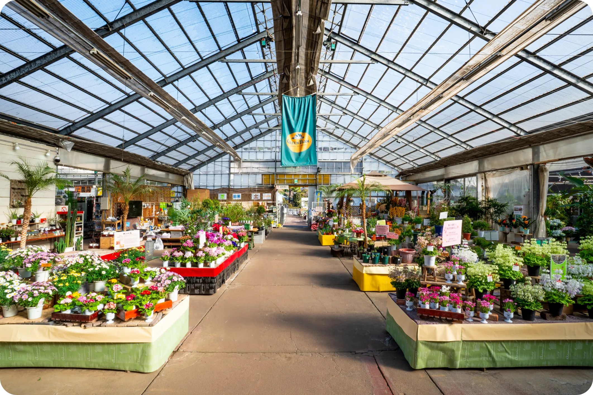

COMPANY
グリーンファームについて
園芸・造園を、
開かれた将来性のある仕事に。
個人の庭づくりだけでなく、街づくり、福祉、農業、観光など、
植物を軸にした仕事の可能性はさらに広がっています。
一方で、まだ古い体質や「職人の世界」というイメージも強い業界。
私たちはその枠を壊し、ガーデンセンター運営からいちご事業まで、
枠にとらわれない挑戦を続けています。
MISSION
私たちの使命

温かみのある絆を育み、誇りを持って歩める
『最良の場』を創り出す
私たちの使命は、共に働く社員を「最も信頼しあえるパワーパートナー」として尊重し、
全員が主役になれる舞台を整えることです。
一人ひとりがプロとしてのプライドと責任を持ち、未来への夢を描ける職場を追求します。
互いを思いやる温かみのある企業文化を育むことで、
社内から溢れ出す活力を、お客様や地域への最高のサービスへと繋げます。
VALUE
私たちの行動指針
私たちの仕事の本質は、
お客様と作り手をつなぐ「橋渡し役」になることです。
想いを受け取る
作り手がどんな想いで育て、
つくっているかを知る。
価値を言葉にする
お客様にとって
その植物がどんな価値を
持つのかを考える。
想いを届ける
自分の言葉で魅力を伝え、
お客様と作り手をつなぐ。
グリーンファームが求める人財
植物が好き。
人と関わる仕事が好き。
そして、今よりもっと成長したい。
そんな想いを持つ人と、私たちは一緒に働きたいと考えています。
新しい価値を生み出していくために
欠かせないのが、社員一人ひとりの力です。
自分を耕す
SELF-UPDATING
現状を「完成」と見なさない、飽くなき向上心
日々の業務に慣れることは、安定ではなく停滞を意味します。
自分のスキルを客観的に捉え、一歩先を行くために必要な学びを自ら取りに行く姿勢。
私たちは、そんなプロフェッショナルとしての自律した歩みを最大限に支援します。
種をまき、動かす
CHALLENGE SPIRIT
指示を待つのではなく、あなたの意思で動く面白さを。
目の前の植物やお客さまのために「今、自分に何ができるか」を問い続け、すぐに行動に移せる力が必要です。 試行錯誤し、自らの手で新しい価値を創り出そうとする熱意。あなたの「思考」と「行動」が、 これからのグリーンファームを塗り替える新しい色になります。
根を広げ、響き合う
MUTUAL INFLUENCE
一人の気づきを、みんなの力に。
一人の成長を自分だけのものにせず、周囲に波及させていく。
お互いの向上心を刺激し合い、高め合える関係性を築くことで、組織全体が瑞々しく
成長し続ける土壌（ファーム）を作ります。
RORDMAP
ロードマップ
できないをできるに変える、
成長のロードマップ
グリーンファームでは、未経験からスタートし、販売・施工・企画・マネジメントへとステップアップしている社員が多くいます。
現場での実践を通して、まずは「植物を知る」ことから。そして「伝えるプロ」へ。
あなたの意欲に合わせて、道はどこまでも広がっています。
一生ものの技術を。
資格取得もサポート。
園芸・造園のプロを目指すあなたのために、資格取得支援や学びの機会を整えています。
「成長したい」という気持ちを、私たちは単なる精神論ではなく、制度として本気でバックアップします。
OVERVIEW
基本情報
- 会社名
- 株式会社グリーンファーム
- 代表
- 石井 淳一
- 設立
- 1979年10月
- 資本金
- 1000万円
- 電話番号
- 045-782-0187
- メール
- info@green-farm.co.jp
- 住所
-
■本社：
〒236-0042 横浜市金沢区釜利谷東4-51-6■金沢本店：
〒236-0042 横浜市金沢区釜利谷東4-49-7■戸塚深谷店：
〒245-0062 横浜市戸塚区汲沢町483-1■あい菜フローラ店：
〒246-0026 横浜市瀬谷区阿久和南4-8-289 - 事業内容
-
■ガーデンセンター事業 【Green Farm】
総合ガーデンセンター
・金沢本店
・戸塚深谷店
コンパクトガーデンセンター
・あい菜フローラ店
■ガーデンエクステリア事業【彩庭】
個人邸を中心にガーデンデザインやエクステリアの設計施工管理工事
植栽/手入れなどの管理業務
■農産物直売事業 【あい菜ふぁーむ】
総合ガーデンセンター
総合ガーデンセンター
■いちご狩り農園【the BERRY YOKOHAMA】
グリーンファーム戸塚深谷店近隣農地
- 従業員
-
正社員 16名
準社員 4名
スタッフ 多数
1級造園施工管理技士 2名
2級造園施工管理技士 2名
2級造園技能士 5名
2級土木施工管理技士 1名
1級室内装飾技能士 1名
2級室内装飾技能士 1名
2級エクステリアプランナー 2名
グリーンアドバイザー 20名
ハンギングマスター 2名
HISTORY
沿革
-
1979年10月
有限会社グリーンファーム設立
・店舗での観葉、庭木、花鉢、花苗、園芸資材の販売開始
・個人邸での造園設計施工管理
-
1989年3月
総合ガーデンセンターを目指して金沢本社を改装
-
1995年3月
金沢本店の園芸資材を拡充
-
1999年10月
グリーンファーム戸塚店オープン
-
2003年7月
営業許可
神奈川県認可番号
第14-057758号 造園「般」B
横浜市認可番号 業者番号 21210 造園C
横浜市公園緑地等管理造園材・木材A
-
2008年9月
株式会社グリーンファームに組織変更
-
2009年2月
ガーデンサロン彩庭を立ち上げる
-
2010年6月
農産物直売あい菜ファームを立ち上げる
-
2014年6月
あい菜フローラ店オープン
-
2014年8月
戸塚深谷店オープン
-
2025年1月
いちご狩り農園 the BERRY YOKOHAMA オープン
ENTRY
あなたの個性を咲かせる職場。
ご応募を心よりお待ちしております！